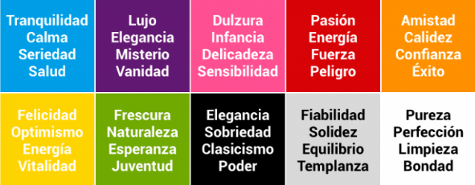
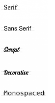

Página de prueba
Color y tipografías
Cualidades del color
- HUE:
- Es el color tal cual es, sin ninguna variación.
- VALUE
- Tiene que ver con la luz que recibe un color, cuanto más cerca de la luz esté más tonos blancos tendrá.
- SATURACIÓN:
- Es la intensidad del color, cuanto más saturación más opaco.

Tipografías
- No usar más de tres tipografías distintas.
- Utilizar fuentes legibles.
- Buen contraste entre fondo y letra.
- Interlineado de 1,5 puntos por el tamaño de la letra.
- NO abusar del subrayado, cursiva ni poner todo mayúsculas.
- Importancia de los espacios blancos entre párrafos.
- Párrafos de entre 45 y 75 carácteres.
- No utilizar textos de menos de 12 px.
